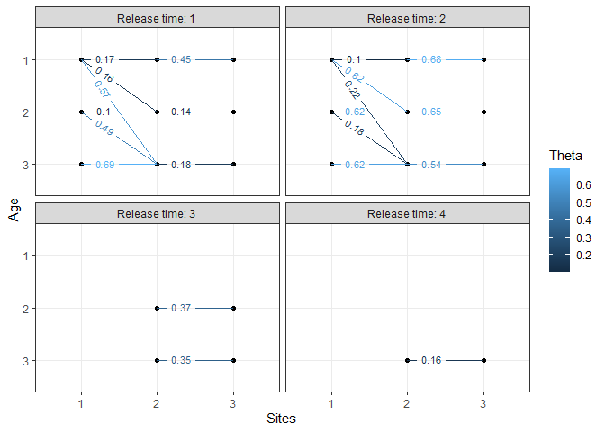
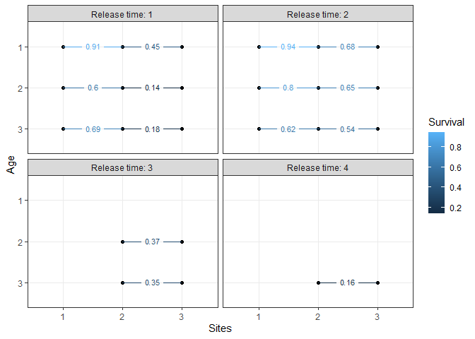

The goal of space4time is to provide a user-friendly interface for fitting a age-specific time-stratified space-for-time mark-recapture model.
Installation
You can install the development version of space4time like so:
remotes::install_github("ryanvosbigian/space4time")Example
library(space4time)
## basic example code
set.seed(1)
# simulate data required to make capture history
sim.dat <- sim_simple_s4t_ch(N = 800)
# to make the capture history, need data in a specific format.
# the observations of individuals need to be in a data.frame, with
# the columns "id", "site", "time", and "removed" (no other columns are used)
head(sim.dat$s4t_ch$obs_data$ch_df)
#> id site time removed
#> 1 1 1 2 FALSE
#> 2 1 2 3 FALSE
#> 3 2 1 1 FALSE
#> 4 2 2 1 FALSE
#> 5 3 1 1 FALSE
#> 6 3 2 2 FALSE
# id is the individual ID. Converted to a character type.
# site is the name of the site the individual was observed at
# time is the time stratum (i.e. year). Can be a Date format or integer.
# removed is a logical (TRUE or FALSE) that indicates where the individual
# was removed at that site (i.e. capture but not released)
# the data on the age of the individuals
head(sim.dat$s4t_ch$obs_data$all_aux)
#> obs_time FL ageclass
#> 1 2 -2.8 NA
#> 2 1 -1.5 2
#> 3 1 0.9 NA
#> 4 1 4.9 3
#> 5 2 -3.6 1
#> 6 1 4.8 3
# the required columns are "id", "obs_time", and "ageclass"
# id is the individual id. Note that all individuals must be included
# obs_time is the time when the age of the individuals was observed. Or,
# if the time when the individual was first observed.
# ageclass is the age of the individual. If age is unknown, NA is used.
# Other columns can be used in the ageclass submodel or for
# individual based covariates. NAs are not allowed.
# Also need to make the s4t_config object, which describes the sites arrangement,
# and the ages that individuals can be.
# Fitting the model.
# p_formula = ~ t : detection probability varies by time (note that
# detection probabilities are not used for transitions from
# the first site or to the last site.
# Because there are only 3 sites, the only site where
# detection probs are estimated are for site 2.
# If there were additional sites, then we would use ~t*k)
# theta_formula = ~ a1 * a2 * s * j : fitting the fully saturated transition
# probabilities. This allows for separate
# probabilities for each age, duration of
# holdover (i.e. age that individuals
# transition to the next site), time,
# and site.
# fixed_age = TRUE : The age-class submodel is fit separately, and the outputs
# are used in the mark-recapture model. The model runs
# faster when this is done.
m1 <- fit_s4t_cjs_rstan(
p_formula = ~ t,
theta_formula = ~ a1 * a2 * s * j,
ageclass_formula = ~ FL,
fixed_age = TRUE,
s4t_ch = sim.dat$s4t_ch,
chains = 2,
warmup = 200,
iter = 600
)
#>
#> SAMPLING FOR MODEL 's4t_cjs_fixedage_draft7' NOW (CHAIN 1).
#> Chain 1:
#> Chain 1: Gradient evaluation took 0.0013 seconds
#> Chain 1: 1000 transitions using 10 leapfrog steps per transition would take 13 seconds.
#> Chain 1: Adjust your expectations accordingly!
#> Chain 1:
#> Chain 1:
#> Chain 1: Iteration: 1 / 600 [ 0%] (Warmup)
#> Chain 1: Iteration: 60 / 600 [ 10%] (Warmup)
#> Chain 1: Iteration: 120 / 600 [ 20%] (Warmup)
#> Chain 1: Iteration: 180 / 600 [ 30%] (Warmup)
#> Chain 1: Iteration: 201 / 600 [ 33%] (Sampling)
#> Chain 1: Iteration: 260 / 600 [ 43%] (Sampling)
#> Chain 1: Iteration: 320 / 600 [ 53%] (Sampling)
#> Chain 1: Iteration: 380 / 600 [ 63%] (Sampling)
#> Chain 1: Iteration: 440 / 600 [ 73%] (Sampling)
#> Chain 1: Iteration: 500 / 600 [ 83%] (Sampling)
#> Chain 1: Iteration: 560 / 600 [ 93%] (Sampling)
#> Chain 1: Iteration: 600 / 600 [100%] (Sampling)
#> Chain 1:
#> Chain 1: Elapsed Time: 19.786 seconds (Warm-up)
#> Chain 1: 36.958 seconds (Sampling)
#> Chain 1: 56.744 seconds (Total)
#> Chain 1:
#>
#> SAMPLING FOR MODEL 's4t_cjs_fixedage_draft7' NOW (CHAIN 2).
#> Chain 2:
#> Chain 2: Gradient evaluation took 0.001512 seconds
#> Chain 2: 1000 transitions using 10 leapfrog steps per transition would take 15.12 seconds.
#> Chain 2: Adjust your expectations accordingly!
#> Chain 2:
#> Chain 2:
#> Chain 2: Iteration: 1 / 600 [ 0%] (Warmup)
#> Chain 2: Iteration: 60 / 600 [ 10%] (Warmup)
#> Chain 2: Iteration: 120 / 600 [ 20%] (Warmup)
#> Chain 2: Iteration: 180 / 600 [ 30%] (Warmup)
#> Chain 2: Iteration: 201 / 600 [ 33%] (Sampling)
#> Chain 2: Iteration: 260 / 600 [ 43%] (Sampling)
#> Chain 2: Iteration: 320 / 600 [ 53%] (Sampling)
#> Chain 2: Iteration: 380 / 600 [ 63%] (Sampling)
#> Chain 2: Iteration: 440 / 600 [ 73%] (Sampling)
#> Chain 2: Iteration: 500 / 600 [ 83%] (Sampling)
#> Chain 2: Iteration: 560 / 600 [ 93%] (Sampling)
#> Chain 2: Iteration: 600 / 600 [100%] (Sampling)
#> Chain 2:
#> Chain 2: Elapsed Time: 22.833 seconds (Warm-up)
#> Chain 2: 36.527 seconds (Sampling)
#> Chain 2: 59.36 seconds (Total)
#> Chain 2:
# plot the transition probabilities:
plotTransitions(m1)
# plot the apparent survival probabilities:
plotSurvival(m1)